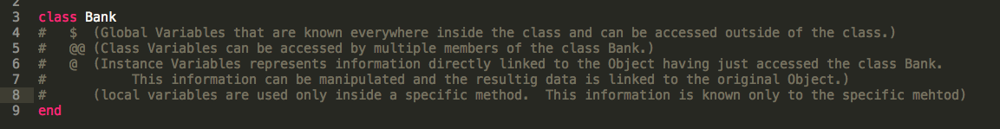
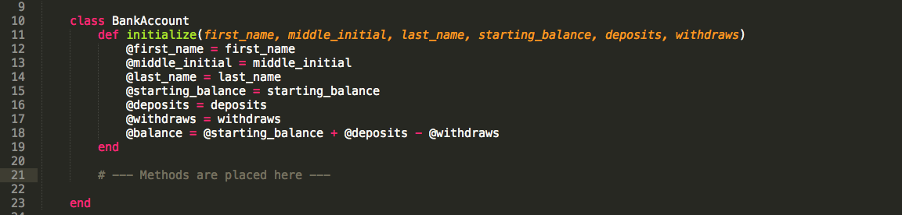
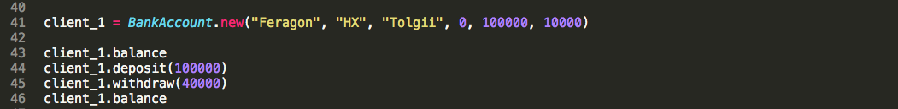

Classes
A Popular Example
Probably the most typical example given for the use of Classes is a Bank and a Bank Account.
This bank has certain procedures that it utilizes. These procedures carry out certain functions. In short, they manipulate information. In coding we would call these procedures or functions, "methods". Some of these methods are directly "knowable"/accessible by each client and others are internal procedures.
First Things First
In the real world, we would write code that "creates" the Bank. For this discussion, we could produce a class called Bank. The class called Bank would contain hundreds of methods and other classes. These methods and classes would need to share certain information as well as not have access to certain information, "isolated" information.
How is this done?
For Our Purposes:
We will need a Class called BankAccount nested inside the Class Bank
We will want potential clients to become members of our bank. They will need to be able to give us personal information. We will want to create personnal accounts for them. They will expect certain services. We will need to be able to proide these services. We will want their information to stay their's - I am not talking about security, but specifically about keeping all of one person's information with that person and not having it spill over into other people's accounts. This is a great use of instance variables.
To do this:
We will need to utilize a method called initialize. This method is placed directly after the opening of our class BankAccount. This method takes in all of the personal initial information. This will link new clients and their information and future transactions together.
How is this done?
Ready to add Methods?
We can add a method for checking our accounts balance, depositing money :), and withdrawing money :). Each one of these methods will need to be able to access information from the client.
Therefore, we will use instance variables for any information that needs to be brought in from "outside" the method.
How is this done?
Accessing Classes and their Method?
Now, our customer is able to check their balance, deposit money, and withdraw money. Each of these transactions are linked to the customer and will be held for the next time that the client wants to access their account.
How is this done?
In the above example Feragon HX Tolgii is instantiated as the owner of a zero balance before the account is opened. Feragon deposits $100,000 and immediately withdraws $10,000.
At some point in the future Feragon checks his balance. Then later deposits $100,000 and at another time withdraws $40,000. He then checks his balance.
Classes also allow for us to use code to be used individually for multiple clients.
Extensions
Classes could also be used to create Umbrella Organizations, Organizations, or Companies that share certain information, goods, and services.